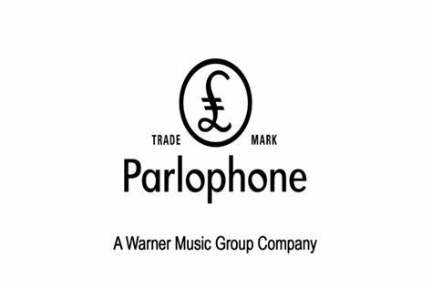

Το κατάστημά μας προσφέρει πληθώρα επιλογών για να υποστηρίξετε
το θρυλικό βρετανικό ροκ συκρότημα Queen.
Η ποικιλία του καταστήματος μας είναι μεγάλη.
Εδώ θα βρείτε από ειδικές εκδόσεις δίσκων σε κάθε μορφή
(Βινύλιο, CD, DVD, κλπ.) μέχρι μπλούζες, αλλά και κάθε είδους
ρούχα σε ξεχωριστά σχέδια και με μοναδικές στάμπες με το
αγαπημένο σας συκρότημα.
Το συγκρότημα επηρεάστηκε από πολλά άλλα Βρετανικά συγκροτήματα
της εποχής όπως τους Pink Floyd, τους The Beatles, τους The
Rolling Stones, τους The Who και τους Led Zeppelin. Οι Queen
δημιούργησαν μουσική που επηρεάστηκε από πολλά διαφορετικά είδη
μουσικής, όπως η progressive rock, η hard rock, η glam rock, η
heavy metal, η pop rock, η dance, η blues-rock και η psychedelic
rock.
Επίσης, έγραψαν και άλλα είδη τραγουδιών που παραδοσιακά δεν σχετίζονται με την
rock, όπως η ragtime, η opera, η gospel, η vaudeville και η
folk.
Οι μουσική και ηχητικοί πειραματισμοί διαφαίνονται ιδιαίτερα στα
τραγούδια των Queen.
Ένα ξεχωριστό χαρακτηριστικό της μουσικής
των Queen είναι η φωνητική αρμονία που δημιουργήθηκε από
συνδυασμούς των φωνών του Μέι, του Μέρκιουρι και του Τέιλορ,
κάτι που γίνεται ιδιαίτερα στα άλμπουμ A Night at the Opera και
A Day at the Races. Οι Queen ήταν ακόμη γνωστοί για το ότι
επανηχογραφούσαν τις φωνές τους για να δημιουργήσουν τον ήχο
χορωδίας. Για παράδειγμα, ο Μπράιαν Μέι είπε ότι για το τραγούδι
«Bohemian Rhapsody», χρησιμοποιήθηκαν πάνω από 180 φωνητικές
ηχογραφήσεις των μελών του συγκροτήματος. Πολλά από τα τραγούδια
του συγκροτήματος γράφτηκαν με στόχο την συμμετοχή του κοινού,
όπως το «We Will Rock You» και το «We Are the Champions».
Ειδικότερα, οι συνεργασίες του συγκροτήματος
με διάφορες δισκογραφικές εταιρίες και μουσικούς παραγωγόυς
είχαν σημαντική επίδραση και καινοτόμησαν σε πολλούς τομείς,
όπως το μίξάρισμα, ηπροσθήκη φυσικών ήχων κ.α.
| Hollywood | Island | Universal | EMI | Parlophone |
|---|---|---|---|---|
|  |